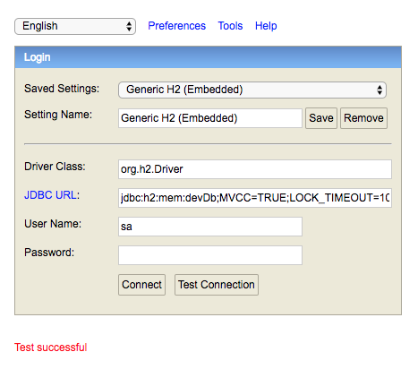
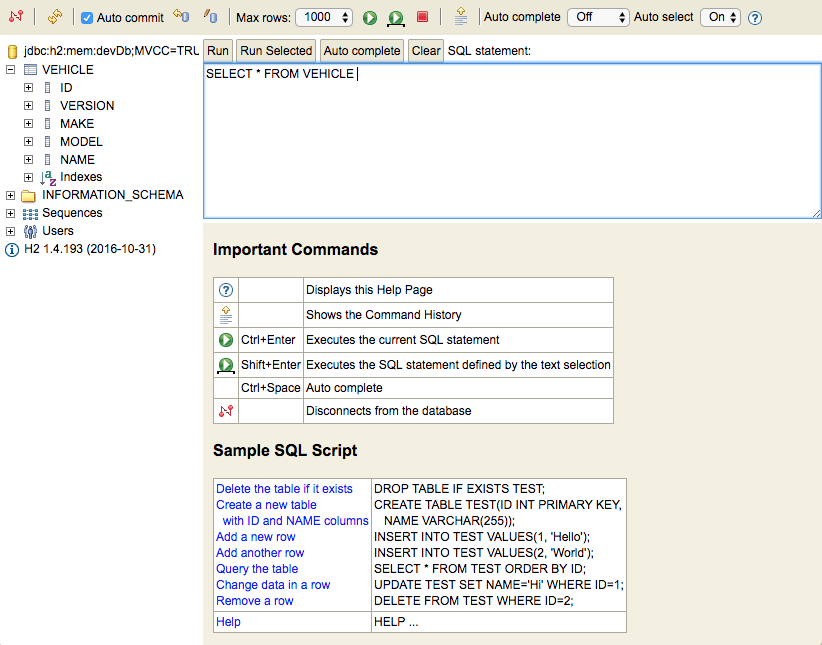

$ ./grailsw create-domain-class Vehicle
| Created grails-app/domain/org/grails/guides/Vehicle.groovy
| Created src/test/groovy/org/grails/guides/VehicleSpec.groovyTable of Contents
5 Domain Classes
Grails is a Model View Controller (MVC) framework, based upon the Spring Boot project. Typically an MVC application divides the responsibilities of the app into three categories:
-
Model - code that defines and manages the data
-
View - code that manages the presentation of data (e.g, HTML page)
-
Controller - code that defines the logic of the web application, and manages the communication between the model and the view. Controllers respond to requests, obtain data from the model, and pass it along to the view.
Typically an object-oriented MVC framework requires the developer to configure which classes correspond to each of the three categories above. However, Grails goes farther than most frameworks by following a "Convention over Configuration" approach to development. This means that for many artefact types in Grails (controllers, views, etc), you simply create a file in a particular directory in your project, and Grails will automatically wire it into your application without any additional configuration on your part.
| Handling the mapping of domain classes to database tables (and other persistent stores) is the job of GORM, the Grails Object Relational Mapper. GORM is a powerful tool in the Grails framework, and can even be used standalone outside of a Grails project. It supports relational databases (via Hibernate) as well as MongoDb, Neo4j, Redis and Cassandra datasources. Please see the GORM documentation for more information. |
When building a MVC application, it is typical to start with the "M" (Model), also known as the "Domain model". In Grails, your domain model is defined with Groovy classes under grails-app/domain. Let’s create a domain class.
5.1 Creating a Domain Class
Domain classes can be generated by Grails (in which case Grails will helpfully create a unit test automatically), or you can simply create the file yourself.
This will generate two Groovy files, one being our domain class, and the other a unit test. Let’s see what our domain class looks like.
package org.grails.guides
class Vehicle {
static constraints = {
}
}Right now our domain class has no properties, and no constraints. That’s not very interesting, but it’s worth noting that this is all that’s needed to wire up a persistent domain class in our application. By default, Hibernate will be used to configure a datasource (an in-memory H2 database by default) and create tables and associations for all Groovy classes under grails-app/domain. Let’s add some properties to this domain class:
package org.grails.guides
class Vehicle {
String name (1)
String make
String model
static constraints = { (2)
name maxSize: 255
make inList: ['Ford', 'Chevrolet', 'Nissan']
model nullable: true
}
}| 1 | Properties will be used to create columns in the database (assuming a relational database is used) |
| 2 | Constraints are used to enforce valid data in each field - Grails provides a rich set of constraints for common scenarios, and you can define custom constraints as well |
Please see the Grails documentation for a complete list and documentation of how to use domain classes and constraints
5.2 DB Console
If you run the app again, you should see the same page as before. However, you can login to the DB Console and view your new database table.
Browse to http://localhost:8080/dbconsole and login. The default username is sa, without a password. The default JDBC URL is: jdbc:h2:mem:devDb;MVCC=TRUE;LOCK_TIMEOUT=10000;DB_CLOSE_ON_EXIT=FALSE

You can view the JDBC url in application.yml, under environments development dataSource url
|
Once you’ve logged in to the DB Console, you should see your new VEHICLES table in the left-hand sidebar. Click the + icon to expand the table - you should see a list of columns, including the three String fields we just defined, name, make, and model.

5.3 Expanding the Domain Model
For our Vehicle class, it doesn’t really make sense that make and model are plain Strings, since models should actually be associated with makes. Let’s update our domain model to be more robust.
Create two new domain classes:
$ ./grailsw create-domain-class Make
| Created grails-app/domain/org/grails/guides/Make.groovy
| Created src/test/groovy/org/grails/guides/Make.groovy
$ ./grailsw create-domain-class Model
| Created grails-app/domain/org/grails/guides/Model.groovy
| Created src/test/groovy/org/grails/guides/Model.groovyEdit these two files with the following content:
grails-app/domain/org/grails/guides/Make.groovy
package org.grails.guides
class Make {
String name
static constraints = {
}
String toString() {
name
}
}grails-app/domain/org/grails/guides/Model.groovy
package org.grails.guides
class Model {
String name
static belongsTo = [ make: Make ]
static constraints = {
}
String toString() {
name
}
}
The belongsTo property is one of several properties that GORM uses to determine associations between domain classes. Others include hasMany and hasOne. For more information please see the GORM documentation.
|
Now, update Vehicle.groovy to use the new Make and Model classes instead of String.
grails-app/domain/org/grails/guides/Vehicle.groovy
package org.grails.guides
@SuppressWarnings('GrailsDomainReservedSqlKeywordName')
class Vehicle {
Integer year
String name
Model model
Make make
static constraints = {
year min: 1900
name maxSize: 255
}
}Grails (via GORM) will now create three tables in our database, for our three domain classes, and create the necessary associations between the tables. Run the app again and open the DB Console to view the new tables.
5.4 Bootstrapping Data
Every Grails project includes a BootStrap.groovy file under grails-app/init. This file can be used for any custom logic you want to happen during application startup. One excellent use of the file is to preload some data in our database. Let’s create a few instances of our three domain classes.
Edit grails-app/init/org/grails/guides/BootStrap.groovy, as shown below:
grails-app/init/org/grails/guides/BootStrap.groovy
package org.grails.guides
import groovy.transform.CompileStatic
@CompileStatic
class BootStrap {
MakeService makeService
ModelService modelService
VehicleService vehicleService
def init = { servletContext ->
Make nissan = makeService.save('Nissan')
Make ford = makeService.save( 'Ford')
Model titan = modelService.save('Titan', nissan)
Model leaf = modelService.save('Leaf', nissan)
Model windstar = modelService.save('Windstar', ford)
vehicleService.save('Pickup', nissan, titan, 2012).save()
vehicleService.save('Economy', nissan, leaf, 2014).save()
vehicleService.save('Minivan', ford, windstar, 1990).save()
}
def destroy = {
}
}Now restart the application, and browse to the DBConsole, you should be able to expand the three tables and see our newly created data.
5.5 Datasources
By default, Grails configures an in-memory H2 database, which is dropped and recreated every time the app is restarted. This will be sufficient for our purposes in this guide, however, you can easily change this to a local database instance by configuring your own datasource. We’ll use MySQL as an example.
5.6 Configure MySQL Datasource
Edit build.gradle
build.gradle
dependencies {
//...
runtime 'mysql:mysql-connector-java:5.1.40' (1)| 1 | Add the MySQL JDBC driver as a dependency |
Be sure to add the dependency to the dependencies section of the build.gradle file, and not the buildscript/dependencies section. The former is for application dependencies (needed at compile time, runtime, or for testing), whereas the buildscript dependencies is for those needed as part of the Gradle build process (managing static assets, for example).
|
Edit application.yml
grails-app/conf/application.yml
dataSource:
pooled: true
jmxExport: true
driverClassName: com.mysql.jdbc.Driver (1)
dialect: org.hibernate.dialect.MySQL5InnoDBDialect
username: sa
password: testing
environments:
development:
dataSource:
dbCreate: update
url: jdbc:mysql://127.0.0.1:3306/myapp (2)| 1 | Change the driverClassName and dialect to MySQL settings |
| 2 | This assumes you have a local MySQL instance with a database named myapp |
5.7 Grails Console
Right now we don’t have any controllers or views set up to play with our domain model. We’ll get there shortly, but for now, let’s fire up the Grails Console so we can explore what Grails and GORM have to offer.
If the application is still running, shut it down with either kbd:[Ctrl+C], or (if running Grails in Interactive Mode, the stop-app command).
Launch the Grails Console:
$ ./grailsw consoleThe Grails Console application will launch. This application is based on the Groovy Console, but has the added benefit that our entire Grails application is up and running in the background, so we can access our domain classes and even persist to the database from the Console.
Try playing with our new domain model from the Console. Here’s a simple script to get you started - again, refer to the GORM documentation for more details on querying, persistence, configuration and more.
docs/console.groovy
import org.grails.guides.*
def vehicles = Vehicle.list()
println vehicles.size()
def pickup = Vehicle.findByName("Pickup")
println pickup.name
println pickup.make.name
println pickup.model.name
def nissan = Make.findByName("Nissan")
def nissans = Vehicle.findAllByMake(nissan)
println nissans.size()